Car Detection#
import numpy as np
import matplotlib.pyplot as plt
import seaborn as sns
import pandas as pd
from sklearn.ensemble import RandomForestClassifier
from sklearn.svm import SVC
from sklearn.decomposition import PCA
from sklearn.metrics import accuracy_score, classification_report, confusion_matrix
from sklearn.model_selection import train_test_split
---------------------------------------------------------------------------
ModuleNotFoundError Traceback (most recent call last)
Cell In[1], line 2
1 import numpy as np
----> 2 import matplotlib.pyplot as plt
3 import seaborn as sns
4 import pandas as pd
ModuleNotFoundError: No module named 'matplotlib'
def load_ts_file(file_path):
X, y = [], []
started = False
with open(file_path, 'r') as f:
for line in f:
line = line.strip()
if line.lower().startswith("@data"):
started = True
continue
if not started or line.startswith("@") or line.startswith("#") or not line:
continue
series_part, label_part = line.split(':')
values = [float(x) for x in series_part.split(',')]
label = int(label_part)
X.append(values)
y.append(label)
return np.array(X), np.array(y)
print("📥 Loading data...")
X_train_raw, y_train_raw = load_ts_file('data/Car/Car_TRAIN.ts')
X_test_raw, y_test_raw = load_ts_file('data/Car/Car_TEST.ts')
# Gabungkan semua data
X_all = np.vstack((X_train_raw, X_test_raw))
y_all = np.hstack((y_train_raw, y_test_raw))
print("Total data:", X_all.shape)
📥 Loading data...
Total data: (120, 577)
X_train, X_test, y_train, y_test = train_test_split(
X_all,
y_all,
test_size=0.2,
random_state=42,
stratify=y_all # menjaga proporsi kelas
)
print("Train shape:", X_train.shape)
print("Test shape :", X_test.shape)
Train shape: (96, 577)
Test shape : (24, 577)
print("\n📊 Data Understanding")
print("Jumlah kelas:", np.unique(y_train))
print("Jumlah data train:", len(y_train))
print("Jumlah data test :", len(y_test))
print("Panjang time series:", X_train.shape[1])
📊 Data Understanding
Jumlah kelas: [1 2 3 4]
Jumlah data train: 96
Jumlah data test : 24
Panjang time series: 577
df = pd.DataFrame(X_train)
print("Statistik data train:")
print(df.describe())
Statistik data train:
0 1 2 3 4 5 \
count 96.000000 96.000000 96.000000 96.000000 96.000000 96.000000
mean 1.632087 1.595342 1.562173 1.533606 1.506904 1.482206
std 0.146198 0.146003 0.144331 0.143997 0.141947 0.138751
min 1.299280 1.261463 1.228439 1.226740 1.225394 1.211650
25% 1.536229 1.501988 1.466873 1.434125 1.420212 1.407773
50% 1.631578 1.594862 1.561195 1.533345 1.502565 1.472113
75% 1.713104 1.675100 1.644154 1.613675 1.583454 1.565564
max 2.141710 2.103058 2.064416 2.025784 1.987163 1.948553
6 7 8 9 ... 567 568 \
count 96.000000 96.000000 96.000000 96.000000 ... 96.000000 96.000000
mean 1.458902 1.439490 1.423070 1.404802 ... 1.459594 1.474470
std 0.138865 0.140852 0.141713 0.144899 ... 0.151682 0.153353
min 1.175233 1.137183 1.098990 1.061144 ... 1.121214 1.153830
25% 1.379007 1.347722 1.330530 1.303449 ... 1.354281 1.365462
50% 1.449380 1.434590 1.415287 1.395467 ... 1.446751 1.461686
75% 1.536925 1.537655 1.515921 1.502453 ... 1.554006 1.549212
max 1.909955 1.871371 1.832798 1.790865 ... 1.840660 1.878951
569 570 571 572 573 574 \
count 96.000000 96.000000 96.000000 96.000000 96.000000 96.000000
mean 1.489709 1.505063 1.521321 1.537828 1.555738 1.572293
std 0.152505 0.152770 0.153739 0.153995 0.153790 0.153119
min 1.180754 1.193377 1.189191 1.212544 1.239413 1.260508
25% 1.380994 1.395112 1.417871 1.435616 1.455930 1.469785
50% 1.490672 1.506207 1.527969 1.550214 1.561401 1.562339
75% 1.573407 1.588937 1.608030 1.616867 1.626622 1.647182
max 1.915492 1.949571 1.987941 2.026321 2.064708 2.073089
575 576
count 96.000000 96.000000
mean 1.590270 1.593943
std 0.148849 0.149853
min 1.297278 1.301700
25% 1.489694 1.489694
50% 1.593794 1.594799
75% 1.678517 1.678517
max 2.067249 2.064416
[8 rows x 577 columns]
labels, counts = np.unique(y_train, return_counts=True)
df_dist = pd.DataFrame({
"Label": labels,
"Jumlah Data": counts
})
print(df_dist)
Label Jumlah Data
0 1 24
1 2 24
2 3 24
3 4 24
def z_normalize(X):
mean = X.mean(axis=1, keepdims=True)
std = X.std(axis=1, keepdims=True)
return (X - mean) / (std + 1e-8)
X_train_norm = z_normalize(X_train)
X_test_norm = z_normalize(X_test)
pca = PCA(n_components=0.95, random_state=42)
X_train_pca = pca.fit_transform(X_train_norm)
X_test_pca = pca.transform(X_test_norm)
print("Dimensi setelah PCA:", X_train_pca.shape[1])
Dimensi setelah PCA: 8
import matplotlib.pyplot as plt
import numpy as np
plt.figure(figsize=(6, 4))
plt.plot(np.cumsum(pca.explained_variance_ratio_), marker='o')
plt.axhline(y=0.95, color='r', linestyle='--', label='95% Variance')
plt.xlabel('Jumlah Komponen PCA')
plt.ylabel('Cumulative Explained Variance')
plt.title('Cumulative Explained Variance PCA')
plt.legend()
plt.grid(alpha=0.3)
plt.show()
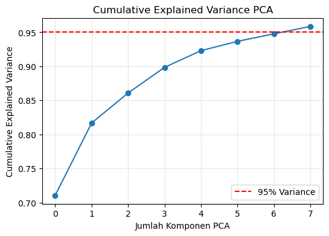
plt.figure(figsize=(7, 6))
for cls in np.unique(y_train):
idx = np.where(y_train == cls)
plt.scatter(
X_train_pca[idx, 0],
X_train_pca[idx, 1],
label=f'Class {cls}',
alpha=0.6
)
plt.xlabel('PCA Component 1')
plt.ylabel('PCA Component 2')
plt.title('Visualisasi Data pada Ruang PCA (2D)')
plt.legend()
plt.grid(alpha=0.3)
plt.show()
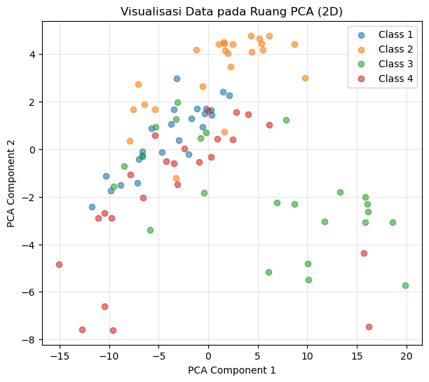
plt.figure(figsize=(8, 4))
plt.bar(range(1, len(pca.explained_variance_ratio_) + 1),
pca.explained_variance_ratio_)
plt.xlabel('Komponen PCA')
plt.ylabel('Explained Variance Ratio')
plt.title('Explained Variance per Komponen PCA')
plt.grid(alpha=0.3)
plt.show()
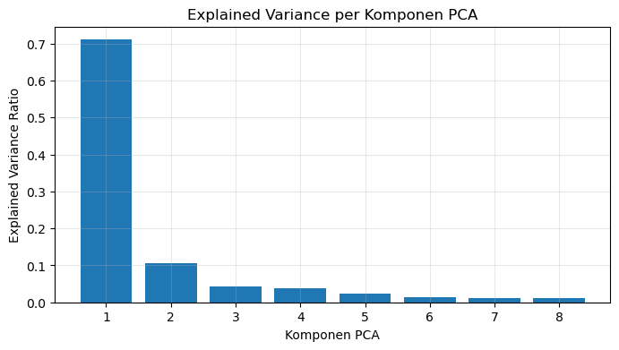
label_map = {1: 'Sedan', 2: 'Pickup', 3: 'Minivan', 4: 'SUV'}
colors = ['blue', 'orange', 'green', 'red']
plt.figure(figsize=(12, 8))
for i, cls in enumerate(sorted(np.unique(y_train))):
idx = np.where(y_train == cls)[0]
mean_series = X_train_norm[idx].mean(axis=0)
plt.subplot(2, 2, i+1)
plt.plot(mean_series, color=colors[i])
plt.title(label_map[cls])
plt.xlabel("Time Step")
plt.ylabel("Normalized Value")
plt.grid(alpha=0.3)
plt.tight_layout()
plt.show()
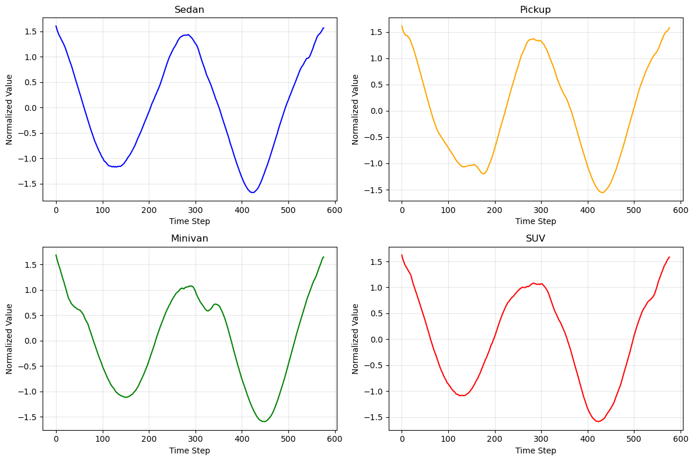
rf_model = RandomForestClassifier(
n_estimators=200,
random_state=42,
n_jobs=-1
)
rf_model.fit(X_train_norm, y_train)
RandomForestClassifier(n_estimators=200, n_jobs=-1, random_state=42)In a Jupyter environment, please rerun this cell to show the HTML representation or trust the notebook.
On GitHub, the HTML representation is unable to render, please try loading this page with nbviewer.org.
RandomForestClassifier(n_estimators=200, n_jobs=-1, random_state=42)
svm_model = SVC(
kernel='rbf',
C=10,
gamma='scale',
)
svm_model.fit(X_train_norm, y_train)
SVC(C=10)In a Jupyter environment, please rerun this cell to show the HTML representation or trust the notebook.
On GitHub, the HTML representation is unable to render, please try loading this page with nbviewer.org.
SVC(C=10)
y_pred_rf = rf_model.predict(X_test_norm)
print("=== RANDOM FOREST ===")
print("Accuracy:", accuracy_score(y_test, y_pred_rf))
print(classification_report(y_test, y_pred_rf))
=== RANDOM FOREST ===
Accuracy: 0.7083333333333334
precision recall f1-score support
1 0.62 0.83 0.71 6
2 1.00 0.67 0.80 6
3 0.71 0.83 0.77 6
4 0.60 0.50 0.55 6
accuracy 0.71 24
macro avg 0.73 0.71 0.71 24
weighted avg 0.73 0.71 0.71 24
y_pred_svm = svm_model.predict(X_test_norm)
print("=== SVM ===")
print("Accuracy:", accuracy_score(y_test, y_pred_svm))
print(classification_report(y_test, y_pred_svm))
=== SVM ===
Accuracy: 0.7083333333333334
precision recall f1-score support
1 0.56 0.83 0.67 6
2 1.00 0.83 0.91 6
3 1.00 0.67 0.80 6
4 0.50 0.50 0.50 6
accuracy 0.71 24
macro avg 0.76 0.71 0.72 24
weighted avg 0.76 0.71 0.72 24
models = {
"Random Forest": y_pred_rf,
"SVM": y_pred_svm
}
plt.figure(figsize=(12, 5))
for i, (name, y_pred) in enumerate(models.items()):
cm = confusion_matrix(y_test, y_pred, labels=[1, 2, 3, 4])
plt.subplot(1, 2, i+1)
sns.heatmap(cm, annot=True, fmt='d', cmap='Blues',
xticklabels=label_map.values(),
yticklabels=label_map.values())
plt.title(name)
plt.xlabel("Predicted")
plt.ylabel("Actual")
plt.tight_layout()
plt.show()
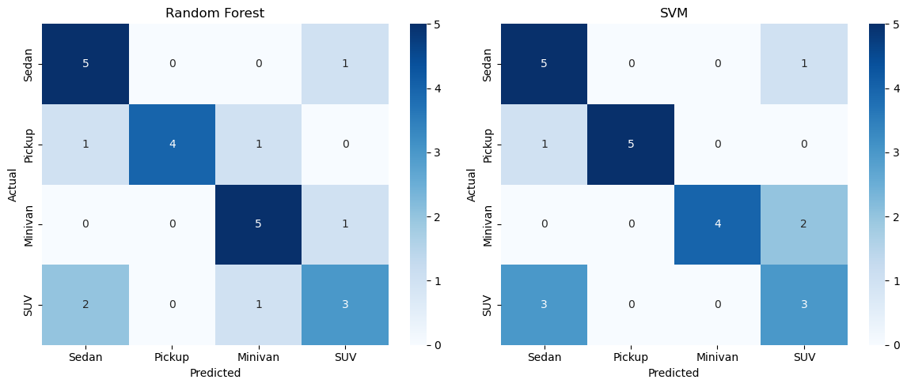
acc_rf = accuracy_score(y_test, y_pred_rf)
acc_svm = accuracy_score(y_test, y_pred_svm)
plt.figure(figsize=(6, 4))
plt.bar(['Random Forest', 'SVM'], [acc_rf, acc_svm])
plt.ylabel("Accuracy")
plt.title("Perbandingan Akurasi Model")
plt.ylim(0, 1)
plt.show()
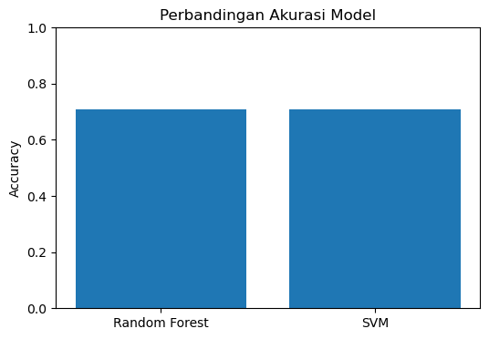
Fine-Tuning#
from sklearn.ensemble import RandomForestClassifier
from sklearn.model_selection import GridSearchCV
rf = RandomForestClassifier(random_state=42, n_jobs=-1)
rf_param = {
'n_estimators': [300, 500],
'max_depth': [15, 25, None],
'min_samples_leaf': [1, 2, 4],
'max_features': ['sqrt']
}
rf_grid = GridSearchCV(
rf, rf_param,
cv=5,
scoring='accuracy',
n_jobs=-1
)
rf_grid.fit(X_train_norm, y_train)
best_rf = rf_grid.best_estimator_
print("🔍 Tuning Random Forest...")
rf_grid.fit(X_train_norm, y_train)
print("Best RF Params:", rf_grid.best_params_)
print("Best RF CV Accuracy:", rf_grid.best_score_)
🔍 Tuning Random Forest...
Best RF Params: {'max_depth': 15, 'max_features': 'sqrt', 'min_samples_leaf': 1, 'n_estimators': 300}
Best RF CV Accuracy: 0.6884210526315788
best_rf = rf_grid.best_estimator_
y_pred_rf = best_rf.predict(X_test_norm)
print("=== RANDOM FOREST (TUNED) ===")
print("Accuracy:", accuracy_score(y_test, y_pred_rf))
print(classification_report(y_test, y_pred_rf))
=== RANDOM FOREST (TUNED) ===
Accuracy: 0.7083333333333334
precision recall f1-score support
1 0.62 0.83 0.71 6
2 1.00 0.67 0.80 6
3 0.71 0.83 0.77 6
4 0.60 0.50 0.55 6
accuracy 0.71 24
macro avg 0.73 0.71 0.71 24
weighted avg 0.73 0.71 0.71 24
from sklearn.svm import SVC
svm = SVC(kernel='rbf')
svm_param = {
'C': [1, 10, 50, 100],
'gamma': ['scale', 0.01, 0.05, 0.1],
}
svm_grid = GridSearchCV(
svm, svm_param,
cv=5,
scoring='accuracy',
n_jobs=-1,
)
svm_grid.fit(X_train_norm, y_train)
best_svm = svm_grid.best_estimator_
print("🔍 Tuning SVM...")
svm_grid.fit(X_train_norm, y_train)
print("Best SVM Params:", svm_grid.best_params_)
print("Best SVM CV Accuracy:", svm_grid.best_score_)
🔍 Tuning SVM...
Best SVM Params: {'C': 50, 'gamma': 0.01}
Best SVM CV Accuracy: 0.8015789473684212
best_svm = svm_grid.best_estimator_
y_pred_svm = best_svm.predict(X_test_norm)
print("=== SVM (TUNED) ===")
print("Accuracy:", accuracy_score(y_test, y_pred_svm))
print(classification_report(y_test, y_pred_svm))
=== SVM (TUNED) ===
Accuracy: 0.8333333333333334
precision recall f1-score support
1 1.00 0.83 0.91 6
2 1.00 1.00 1.00 6
3 0.80 0.67 0.73 6
4 0.62 0.83 0.71 6
accuracy 0.83 24
macro avg 0.86 0.83 0.84 24
weighted avg 0.86 0.83 0.84 24
from sklearn.neighbors import KNeighborsClassifier
knn = KNeighborsClassifier()
knn_param = {
'n_neighbors': [1, 3, 5, 7],
'weights': ['uniform', 'distance'],
'metric': ['euclidean']
}
knn_grid = GridSearchCV(
knn, knn_param,
cv=5,
scoring='accuracy'
)
knn_grid.fit(X_train_norm, y_train)
best_knn = knn_grid.best_estimator_
print("🔍 Tuning KNN...")
knn_grid.fit(X_train_norm, y_train)
print("Best KNN Params:", knn_grid.best_params_)
print("Best KNN CV Accuracy:", knn_grid.best_score_)
🔍 Tuning KNN...
Best KNN Params: {'metric': 'euclidean', 'n_neighbors': 3, 'weights': 'distance'}
Best KNN CV Accuracy: 0.781578947368421
best_knn = knn_grid.best_estimator_
y_pred_knn = best_knn.predict(X_test_norm)
print("=== KNN (TUNED) ===")
print("Accuracy:", accuracy_score(y_test, y_pred_knn))
print(classification_report(y_test, y_pred_knn))
=== KNN (TUNED) ===
Accuracy: 0.7916666666666666
precision recall f1-score support
1 0.75 1.00 0.86 6
2 1.00 0.83 0.91 6
3 0.67 1.00 0.80 6
4 1.00 0.33 0.50 6
accuracy 0.79 24
macro avg 0.85 0.79 0.77 24
weighted avg 0.85 0.79 0.77 24
acc_rf = accuracy_score(y_test, y_pred_rf)
acc_svm = accuracy_score(y_test, y_pred_svm)
acc_knn = accuracy_score(y_test, y_pred_knn)
plt.figure(figsize=(6, 4))
plt.bar(['Random Forest (Tuned)', 'SVM (Tuned)', 'KNN (Tuned)'], [acc_rf, acc_svm, acc_knn])
plt.ylabel("Accuracy")
plt.title("Perbandingan Akurasi Model (Setelah Tuning)")
plt.ylim(0, 1)
plt.show()
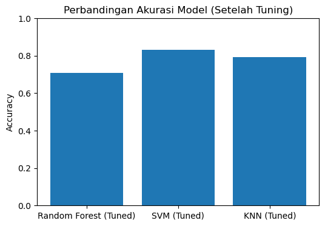
Test Model#
import cv2
import numpy as np
import matplotlib.pyplot as plt
from scipy.signal import resample
img = cv2.imread("images/cars/sedan-1.jpeg") # ganti path
img_rgb = cv2.cvtColor(img, cv2.COLOR_BGR2RGB)
plt.figure(figsize=(4,4))
plt.imshow(img_rgb)
plt.title("Gambar Asli")
plt.axis("off")
plt.show()
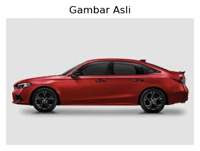
gray = cv2.cvtColor(img, cv2.COLOR_BGR2GRAY)
blur = cv2.GaussianBlur(gray, (5, 5), 0)
plt.figure(figsize=(4,4))
plt.imshow(blur, cmap="gray")
plt.title("Grayscale + Blur")
plt.axis("off")
plt.show()

edges = cv2.Canny(blur, 50, 150)
plt.figure(figsize=(4,4))
plt.imshow(edges, cmap="gray")
plt.title("Edge Detection (Canny)")
plt.axis("off")
plt.show()
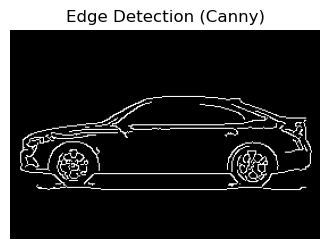
kernel = np.ones((3, 3), np.uint8)
edges_closed = cv2.morphologyEx(edges, cv2.MORPH_CLOSE, kernel)
plt.figure(figsize=(4,4))
plt.imshow(edges_closed, cmap="gray")
plt.title("Edges Setelah Morphology")
plt.axis("off")
plt.show()
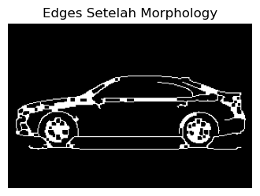
contours, _ = cv2.findContours(
edges_closed,
cv2.RETR_EXTERNAL,
cv2.CHAIN_APPROX_NONE
)
cnt = max(contours, key=cv2.contourArea)
img_contour = img_rgb.copy()
cv2.drawContours(img_contour, [cnt], -1, (255, 0, 0), 2)
plt.figure(figsize=(4,4))
plt.imshow(img_contour)
plt.title("Kontur Kendaraan (Outline)")
plt.axis("off")
plt.show()
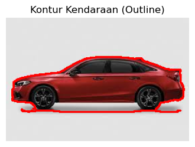
center = cnt.mean(axis=0)
cx, cy = int(center[0][0]), int(center[0][1])
img_center = img_contour.copy()
cv2.circle(img_center, (cx, cy), 5, (0, 255, 0), -1)
plt.figure(figsize=(4,4))
plt.imshow(img_center)
plt.title("Kontur + Titik Pusat")
plt.axis("off")
plt.show()
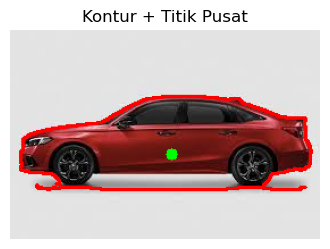
ts = np.linalg.norm(cnt - center, axis=2).flatten()
plt.figure(figsize=(8,3))
plt.plot(ts)
plt.title("Time Series Jarak Kontur ke Pusat")
plt.xlabel("Urutan Titik Kontur")
plt.ylabel("Jarak")
plt.grid(alpha=0.3)
plt.show()

ts_resampled = resample(ts, 577)
plt.figure(figsize=(8,3))
plt.plot(ts_resampled)
plt.title("Time Series Setelah Resampling (577 titik)")
plt.xlabel("Index")
plt.ylabel("Jarak")
plt.grid(alpha=0.3)
plt.show()
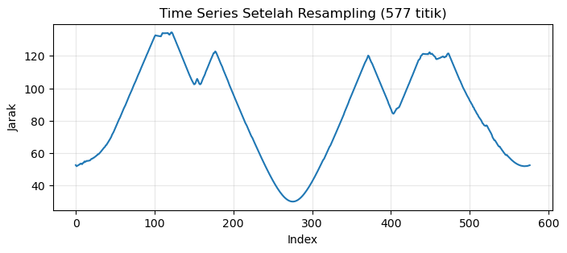
ts_norm = (ts_resampled - ts_resampled.mean()) / ts_resampled.std()
plt.figure(figsize=(8,3))
plt.plot(ts_norm)
plt.title("Time Series Setelah Normalisasi")
plt.xlabel("Index")
plt.ylabel("Nilai Normalisasi")
plt.grid(alpha=0.3)
plt.show()
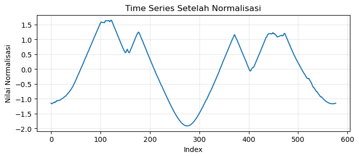
label_map = {
1: "Sedan",
2: "Pickup",
3: "Minivan",
4: "SUV"
}
ts_norm = ts_norm.reshape(1, -1)
pred_label = svm_grid.predict(ts_norm)[0]
pred_name = label_map[pred_label]
print("Predicted label:", pred_label)
print("Predicted vehicle type:", pred_name)
Predicted label: 3
Predicted vehicle type: Minivan
Test 2#
import cv2
import numpy as np
import matplotlib.pyplot as plt
from sklearn.preprocessing import StandardScaler
from sklearn.svm import SVC
img = cv2.imread("images/cars/sedan.jpeg") # GANTI PATH GAMBAR
img = cv2.resize(img, (600, 400))
plt.imshow(cv2.cvtColor(img, cv2.COLOR_BGR2RGB))
plt.title("Gambar Asli")
plt.axis("off")
plt.show()
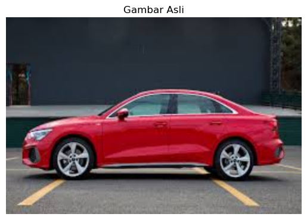
mask = np.zeros(img.shape[:2], np.uint8)
bgdModel = np.zeros((1, 65), np.float64)
fgdModel = np.zeros((1, 65), np.float64)
# ROI kasar (asumsi mobil di tengah)
rect = (50, 50, img.shape[1]-100, img.shape[0]-100)
cv2.grabCut(img, mask, rect, bgdModel, fgdModel, 5, cv2.GC_INIT_WITH_RECT)
mask2 = np.where((mask==2)|(mask==0), 0, 1).astype('uint8')
img_fg = img * mask2[:, :, np.newaxis]
plt.imshow(cv2.cvtColor(img_fg, cv2.COLOR_BGR2RGB))
plt.title("Foreground (Mobil)")
plt.axis("off")
plt.show()
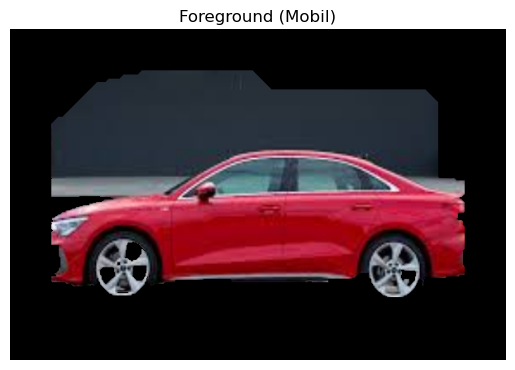
gray = cv2.cvtColor(img_fg, cv2.COLOR_BGR2GRAY)
blur = cv2.GaussianBlur(gray, (5, 5), 0)
edges = cv2.Canny(blur, 50, 150)
kernel = cv2.getStructuringElement(cv2.MORPH_ELLIPSE, (5,5))
edges_closed = cv2.morphologyEx(edges, cv2.MORPH_CLOSE, kernel)
plt.imshow(edges_closed, cmap='gray')
plt.title("Edges")
plt.axis("off")
plt.show()
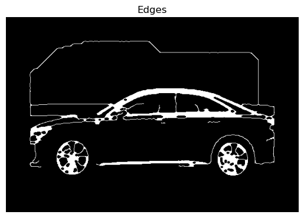
contours, _ = cv2.findContours(
edges_closed, cv2.RETR_EXTERNAL, cv2.CHAIN_APPROX_NONE
)
# Filter area kecil
min_area = img.shape[0] * img.shape[1] * 0.05
large_contours = [c for c in contours if cv2.contourArea(c) > min_area]
cnt = max(large_contours, key=cv2.contourArea)
contour_img = img.copy()
cv2.drawContours(contour_img, [cnt], -1, (255,0,0), 2)
plt.imshow(cv2.cvtColor(contour_img, cv2.COLOR_BGR2RGB))
plt.title("Kontur Kendaraan")
plt.axis("off")
plt.show()
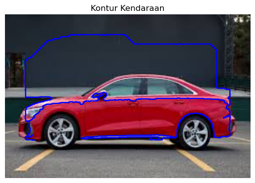
# Ambil titik kontur
pts = cnt.squeeze()
# Titik pusat
cx, cy = pts.mean(axis=0)
# Jarak ke pusat (shape signature)
distances = np.sqrt((pts[:,0]-cx)**2 + (pts[:,1]-cy)**2)
plt.plot(distances)
plt.title("Time Series Kontur")
plt.xlabel("Index Kontur")
plt.ylabel("Jarak ke Pusat")
plt.show()
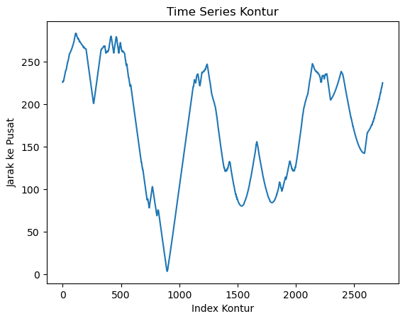
TARGET_LEN = 577 # samakan dengan data training
ts_resampled = np.interp(
np.linspace(0, len(distances)-1, TARGET_LEN),
np.arange(len(distances)),
distances
)
ts_norm = (ts_resampled - ts_resampled.mean()) / ts_resampled.std()
# Mapping kelas (SESUIKAN DENGAN DATASET)
class_names = {
0: "Sedan",
1: "Pickup",
2: "Minivan",
3: "SUV"
}
ts_norm = ts_norm.reshape(1, -1)
pred = svm_grid.predict(ts_norm)[0]
print("Predicted class ID:", pred)
print("Predicted class name:", class_names.get(pred, "Unknown"))
Predicted class ID: 2
Predicted class name: Minivan
Simpan Model#
import joblib
joblib.dump(svm_grid.best_estimator_, "models/svm_car_model.pkl")
joblib.dump(pca, "models/pca.pkl")
['models/pca.pkl']